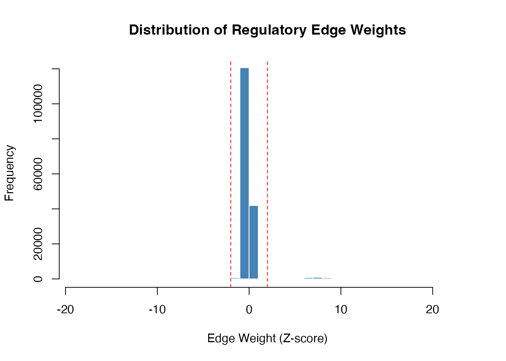

Introduction
SCORPION (Single-Cell Oriented Reconstruction of PANDA Individually Optimized Networks) is a computational framework for inferring cell-type-specific gene regulatory networks (GRNs) from single-cell RNA sequencing data.
This vignette provides a quick introduction to using SCORPION for gene regulatory network inference.
Installation
# From R-universe (Recommended)
install.packages("SCORPION", repos = "https://zaoqu-liu.r-universe.dev")
# From GitHub
remotes::install_github("Zaoqu-Liu/SCORPION")Example Data
SCORPION comes with example data consisting of:
- Gene expression matrix: A sparse matrix with genes as rows and cells as columns
- TF-target motif prior: A data frame describing transcription factor binding sites
- Protein-protein interactions: A data frame of known TF-TF interactions
# Load example data
data(scorpionTest)
# Examine the structure
cat("Gene expression matrix:", nrow(scorpionTest$gex), "genes x",
ncol(scorpionTest$gex), "cells\n")
#> Gene expression matrix: 230 genes x 80 cells
cat("TF-target motif edges:", nrow(scorpionTest$tf), "\n")
#> TF-target motif edges: 4485
cat("Protein-protein interactions:", nrow(scorpionTest$ppi), "\n")
#> Protein-protein interactions: 12754Running SCORPION
The main function scorpion() takes three inputs and
returns three networks:
# Run SCORPION
set.seed(123)
result <- scorpion(
tfMotifs = scorpionTest$tf, # TF-target motif prior
gexMatrix = scorpionTest$gex, # Gene expression matrix
ppiNet = scorpionTest$ppi, # Protein-protein interactions
gammaValue = 10, # Metacell aggregation ratio
alphaValue = 0.1, # Learning rate
hammingValue = 0.001 # Convergence threshold
)Output Structure
SCORPION returns a list containing:
# Network dimensions
cat("Regulatory network:", dim(result$regNet)[1], "TFs x",
dim(result$regNet)[2], "genes\n")
#> Regulatory network: 783 TFs x 214 genes
cat("Co-regulatory network:", dim(result$coregNet)[1], "x",
dim(result$coregNet)[2], "genes\n")
#> Co-regulatory network: 214 x 214 genes
cat("Cooperative network:", dim(result$coopNet)[1], "x",
dim(result$coopNet)[2], "TFs\n")
#> Cooperative network: 783 x 783 TFs
# Summary statistics
cat("\nNumber of genes:", result$numGenes, "\n")
#>
#> Number of genes: 214
cat("Number of TFs:", result$numTFs, "\n")
#> Number of TFs: 783
cat("Number of edges:", result$numEdges, "\n")
#> Number of edges: 167562Extracting Top Regulatory Edges
# Get regulatory network
regNet <- result$regNet
# Find top positive regulators
top_edges <- which(regNet > 2, arr.ind = TRUE)
if(nrow(top_edges) > 0) {
top_df <- data.frame(
TF = rownames(regNet)[top_edges[,1]],
Gene = colnames(regNet)[top_edges[,2]],
Score = regNet[top_edges]
)
top_df <- top_df[order(-top_df$Score), ]
head(top_df, 10)
}
#> TF Gene Score
#> 289 ESRRB CA2 22.59849
#> 999 HSF5 FCRLA 17.98239
#> 1320 RFX5 HLA-DQA1 17.29737
#> 3265 ZNF57 TTC38 16.70364
#> 2504 ZNF18 PTCRA 16.49227
#> 3008 DMRTB1 TCL1A 16.48504
#> 1090 FLI1 GP9 16.41962
#> 446 PHOX2B CD68 16.03947
#> 2344 GATA1 PF4 15.97612
#> 444 ESR2 CD68 15.89983Visualizing Network Statistics
# Edge weight distribution
hist(as.vector(result$regNet), breaks = 50,
main = "Distribution of Regulatory Edge Weights",
xlab = "Edge Weight (Z-score)",
col = "steelblue", border = "white")
abline(v = c(-2, 2), col = "red", lty = 2)

Distribution of regulatory edge weights
Session Information
sessionInfo()
#> R version 4.4.0 (2024-04-24)
#> Platform: aarch64-apple-darwin20
#> Running under: macOS 15.6.1
#>
#> Matrix products: default
#> BLAS: /Library/Frameworks/R.framework/Versions/4.4-arm64/Resources/lib/libRblas.0.dylib
#> LAPACK: /Library/Frameworks/R.framework/Versions/4.4-arm64/Resources/lib/libRlapack.dylib; LAPACK version 3.12.0
#>
#> locale:
#> [1] C
#>
#> time zone: Asia/Shanghai
#> tzcode source: internal
#>
#> attached base packages:
#> [1] stats graphics grDevices utils datasets methods base
#>
#> other attached packages:
#> [1] Matrix_1.7-4 SCORPION_1.2.1
#>
#> loaded via a namespace (and not attached):
#> [1] cli_3.6.5 knitr_1.51 rlang_1.1.7 xfun_0.56
#> [5] otel_0.2.0 textshaping_1.0.4 jsonlite_2.0.0 htmltools_0.5.9
#> [9] ragg_1.5.0 sass_0.4.10 rmarkdown_2.30 grid_4.4.0
#> [13] evaluate_1.0.5 jquerylib_0.1.4 fastmap_1.2.0 yaml_2.3.12
#> [17] lifecycle_1.0.5 compiler_4.4.0 codetools_0.2-20 igraph_2.2.1
#> [21] irlba_2.3.5.1 fs_1.6.6 pkgconfig_2.0.3 htmlwidgets_1.6.4
#> [25] pbapply_1.7-4 systemfonts_1.3.1 lattice_0.22-7 digest_0.6.39
#> [29] R6_2.6.1 RANN_2.6.2 parallel_4.4.0 magrittr_2.0.4
#> [33] bslib_0.9.0 tools_4.4.0 pkgdown_2.2.0 cachem_1.1.0
#> [37] desc_1.4.3